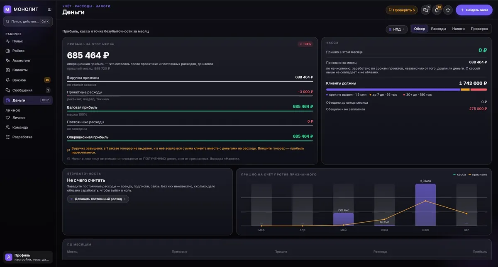

CRM для видеопродакшена, студии и фрилансера: заказы, деньги и заявки в одном окнеМОНОЛИТ
Я снимаю и крашу больше десяти лет, и всё это время учёт жил в заметках, а деньги — в голове. Три года назад начал писать себе приложение, чтобы перестать держать смены, долги и налог в памяти. Выросло оно из работы оператора, но устроено шире: одинаково спокойно ведёт одного фрилансера, продюсера с пятью проектами и студию, где надо считать часы и выплаты по людям.
Зачем снимающему приложение для учёта заказов
Съёмка живёт в переписке. Дата — в одном чате, сумма — в другом, предоплата пришла на карту без комментария, сдача через две недели, а в апреле выясняется, что за год нужно заплатить налог, и никто не помнит, с какой суммы.
Обычные CRM написаны для отделов продаж: воронки, лиды, менеджеры. Снимающему человеку нужно другое — смена, аванс, остаток, срок сдачи и честный ответ, сколько денег в этом месяце реально придёт. Ничего похожего я не нашёл, поэтому собрал сам.
Кому подходит
Считает одинаково и одному человеку, и студии: разница только в том, сколько людей смотрит в общую базу.
Что МОНОЛИТ умеет
Разделов много, но каждый день открываешь три: заказы, деньги и ассистента.


ШТАБ: заказы с рынка приходят в приложение сами
Пока другие вечером листают чаты, вы уже ответили. Радар слушает круглосуточно, а вы открываете одну ленту вместо десяти вкладок — один человек или вся команда, у которой лента общая.
Ищу оператора на интервью в студии, Москва, 24 сентября, одна смена, свет мой
25 000 ₽ · СменыВидеомонтажёр на проект, удалённо, ролики для маркетплейса
МонтажЦветокоррекция короткометражки в DaVinci Resolve, материал S-Log3
18 000 ₽ · ЦветокорТак устроена лента: источник, время, сумма и сфера у каждого объявления, три действия в один тап.
Как ШТАБ ловит заказ
Что автоматизируется честно, а что нет
Полная автоматизация переписки стоит аккаунта. Мой аккаунт дороже красивого обещания, поэтому границы записаны прямо здесь.
| Канал | Сбор заявок | Ответ из приложения |
|---|---|---|
| Telegram | Автоматически, круглосуточно | Да, с задержками и суточным лимитом |
| hh.ru | Автоматически, по вашим поискам | Отклик ручной: hh закрыл соискательский интерфейс, письмо готовится в приложении, отправляете вы |
| FL.ru | Автоматически | Отклик на сайте биржи |
| Авито | Сообщения доезжают в приложение | Ручной |
| ВКонтакте | Посты сообществ по ключевым словам | Открыть диалог, текст готов в буфере |
| Не подключаем | Личный аккаунт дороже автоматизации, заявка заносится руками |
Сейчас в ШТАБе работает «Рынок» — та самая лента с ответами и переносом в учёт. Разделы «Продажи», «Каналы» и «Тексты» я доделываю: воронка касаний, подключение своих аккаунтов из приложения и заготовки сообщений под сферу.
Сколько стоит МОНОЛИТ и доступ в ШТАБ
Полный доступ без карты. Дальше подписка 1 499 ₽ в месяц за учётную запись — одна на телефон и компьютер, с командой и синхронизацией.
Тарифы и оплатаОтдельный доступ к ленте заказов. Одна смена оператора стоит от 15 000 ₽, так что первый пойманный заказ окупает его втрое. Включаю вручную по ID аккаунта из вкладки Профиль — переустанавливать приложение не нужно.
Написать про ШТАБГде скачать
Установщик для Windows и приложение для Android — на сайте приложения: monolithapp.github.io. Android-версия лежит и в RuStore. Если что-то не ставится или непонятно, куда нажимать, — напишите мне, отвечаю сам.
Как устроена разработка и почему приложение вообще появилось — в кейсе про MONOLITH. Нужно похожее приложение под свою задачу — это отдельная услуга.
Частые вопросы
Чем это лучше заметок и таблицы?
Таблица не считает налог, не помнит, кто сколько должен, и не поднимает трубку. Здесь заказ, платежи, расходы и налоговый режим лежат в одной записи, а сводка сама говорит, что горит и сколько денег ждать в этом месяце.
Данные лежат у вас на сервере?
База живёт на устройстве и шифруется. Облачная копия и синхронизация между телефоном и ПК — по желанию, ключ остаётся у владельца базы.
Что делает ШТАБ, если коротко?
Радар круглосуточно слушает телеграм-чаты со сменами, поиски hh.ru и биржу FL.ru и складывает объявления в одну ленту внутри приложения. Оттуда заказ можно отправить в работу одной кнопкой — он станет заказом в учёте со сроками и деньгами.
Сколько стоит доступ в ШТАБ?
5 000 ₽ разовым платежом, доступ остаётся навсегда. Включается по ID аккаунта из вкладки Профиль, приложение переустанавливать не нужно.
Можно отвечать на заявки прямо из приложения?
В телеграм-чатах — да, ответ уходит из приложения с задержками и лимитами, чтобы не потерять аккаунт. На hh.ru и биржах отклик остаётся ручным: письмо готовится в приложении, отправляете его вы.
Я не видеограф, а продюсер, фотограф или монтажёр. Подойдёт?
Да. Внутри нет ничего «про камеру»: заказ, клиент, этапы, деньги, часы и налог одинаковы у любой сдельной работы. Продакшену полезнее всего командная часть — общая база, роли, часы и выплаты по людям.